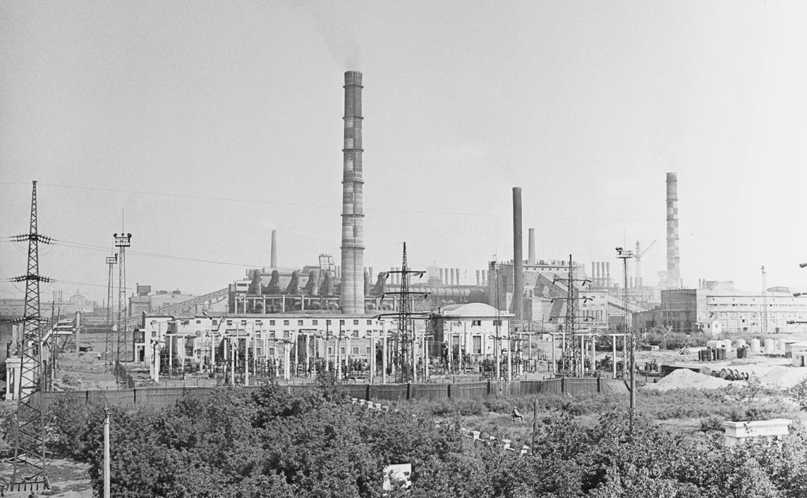

О компании
Южно-Уральский никелевый комбинат - одно из ведущих предприятий горно-металлургической промышленности России, специализирующееся на добыче и переработке никелевых руд.
История компании
Компания была основана в 1936 году как часть стратегического развития металлургической промышленности СССР. В первые годы предприятие занималось добычей никелевых руд открытым способом.
1942 Первая партия конвертерного мата была получена в 1943 году, когда на Норильском комбинате был открыт цех электролиза никеля.
В 1950-х годах началась модернизация производства, были внедрены новые технологии обогащения руды. К 1965 году комбинат вышел на полную проектную мощность.
В1953 Норильску был присвоен статус города, а Норильский комбинат производил 35% никеля, 12% меди, 30% кобальта и 90% драгоценных металлов от общего объёма производства металлов в Советском Союзе.
В1960 Талнахское месторождение, крупнейшее в мире месторождение медно-никелевых руд, было открыто, что дало новую жизнь Норильскому комбинату. Началось строительство рудников и города Талнах на полуострове Таймыр.
В1965 Было открыто месторождение медно-никелевых руд Октябрьское.
В1981 Были введены в эксплуатацию Надеждинский металлургический завод и первая очередь Талнахского ГОКа.
В1993 Указом Президента Российской Федерации Государственный концерн по производству драгоценных металлов и алмазов «Норильский никель» был преобразован в Российское акционерное общество (РАО) «Норильский никель» по производству драгоценных металлов и алмазов.
Современное состояние
Сегодня комбинат входит в состав Группы Норникель и является ключевым поставщиком никеля для российской и международной промышленности.
Основные направления деятельности:
- Добыча никелевых руд
- Производство никелевого концентрата
- Выпуск металлического никеля
- Производство никелевых сплавов
Технологии и инновации
Комбинат активно внедряет современные технологии:
- Автоматизированные системы управления производством
- Экологически чистые методы переработки
- Системы рециклинга отходов производства
Экологическая политика
Компания уделяет особое внимание вопросам экологии:
Ежегодно инвестируются значительные средства в модернизацию очистных сооружений и внедрение наилучших доступных технологий (НДТ).
Перспективы развития
На ближайшие 5 лет запланировано:
- Расширение сырьевой базы
- Строительство нового обогатительного комплекса
- Увеличение производственных мощностей на 25%
Финансовая отчетность
За 2024 год
- 12.5 Выручка в размере миллиарда долларов США
- 5.2 Миллиард долларов США EBITDA
- 41% Рентабельность по EBITDA
- 1.7x Чистый долг / EBITDA